First time for a year as a UI Designer, redesigning various sections of the company websites, and working with Java Developers to implement designs.
Main account pages used throughout the sites. My redesign simplified the look and made everything a bit more modern.
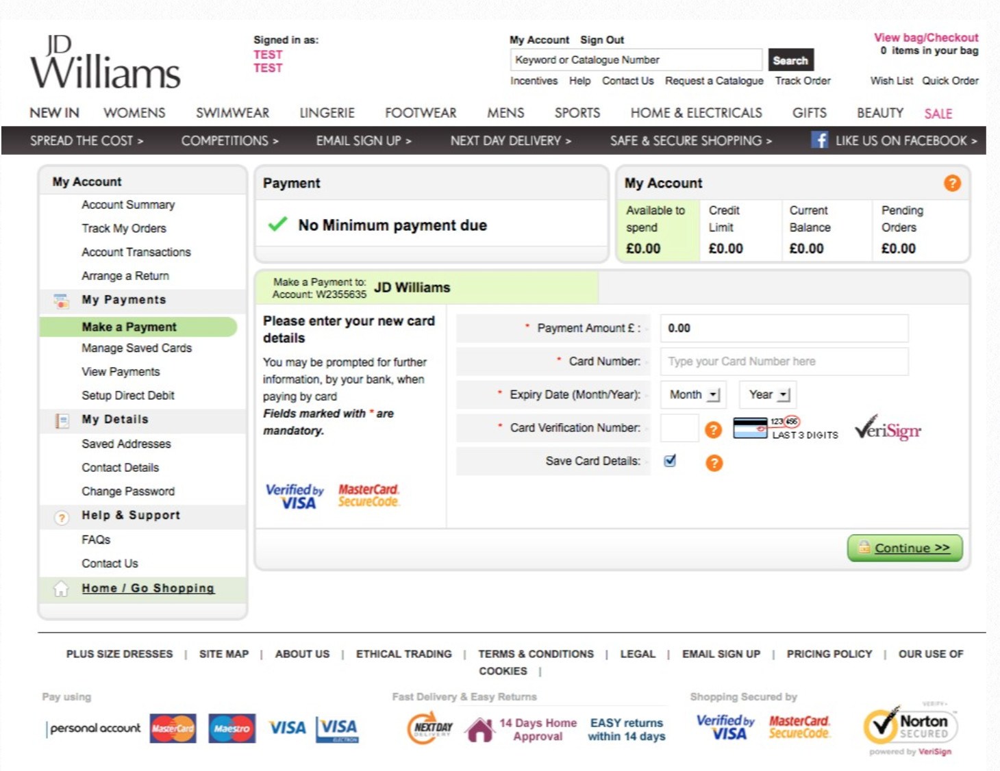
Simply Be USA product index pages. I tweaked the designs to make images bigger and allow for promo badges over the products.
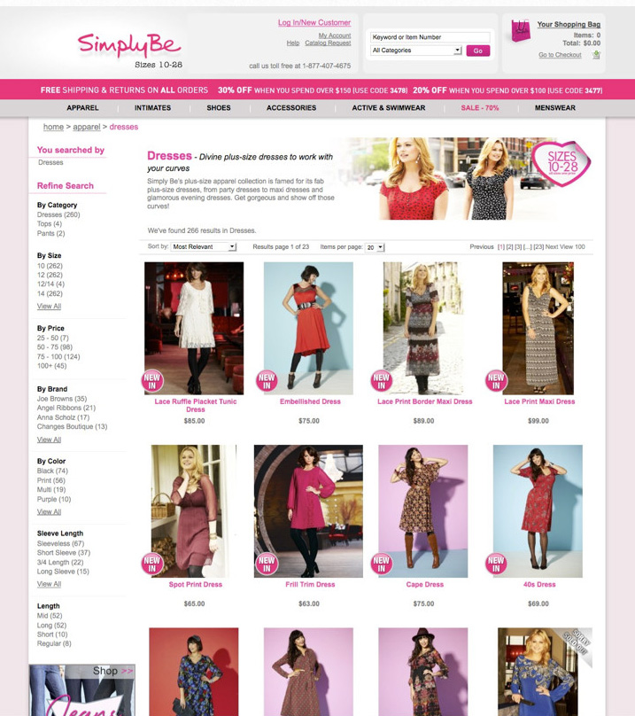
I then went back a couple of years later as a freelance web designer, this time working on their day to day fashion sites, working to very tight deadlines with numerous projects needing to be completed every day. I would create layouts with photos and text, along with coding the pages and really enjoyed the fast pace of this role. Examples below include Jacamo, Premier Man and Brillian Gift Shop.
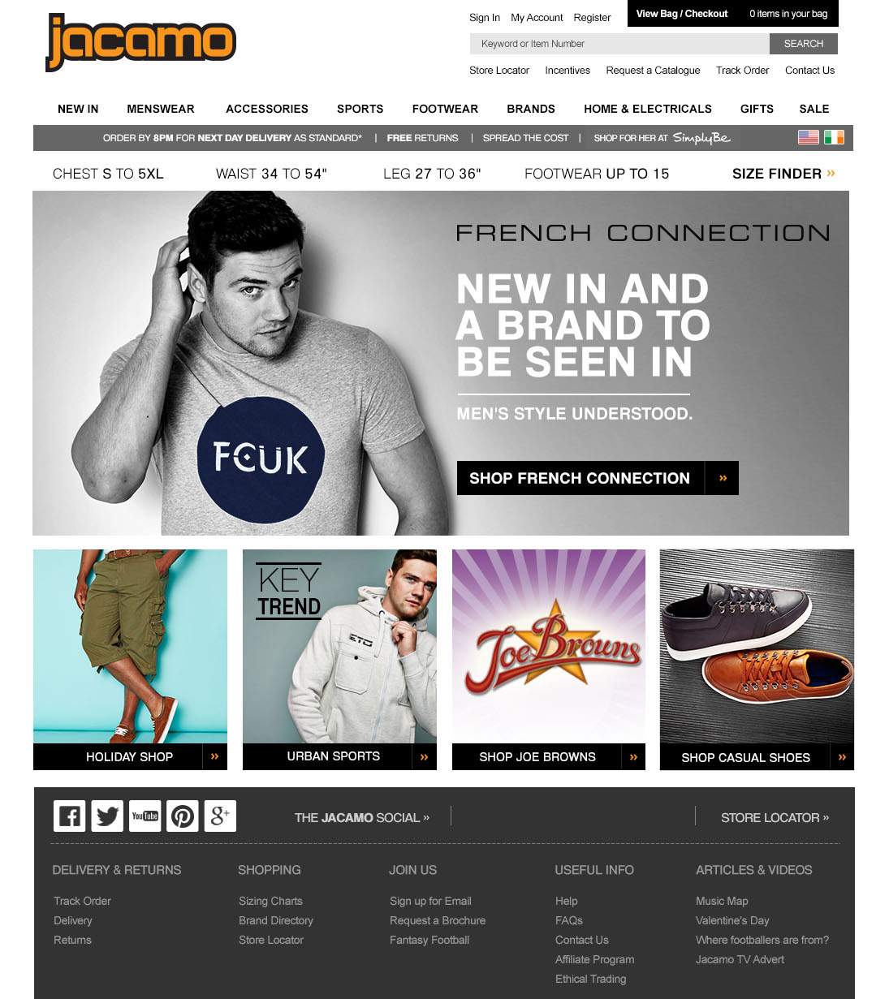
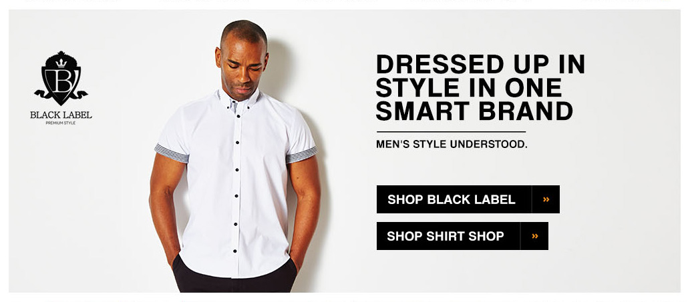
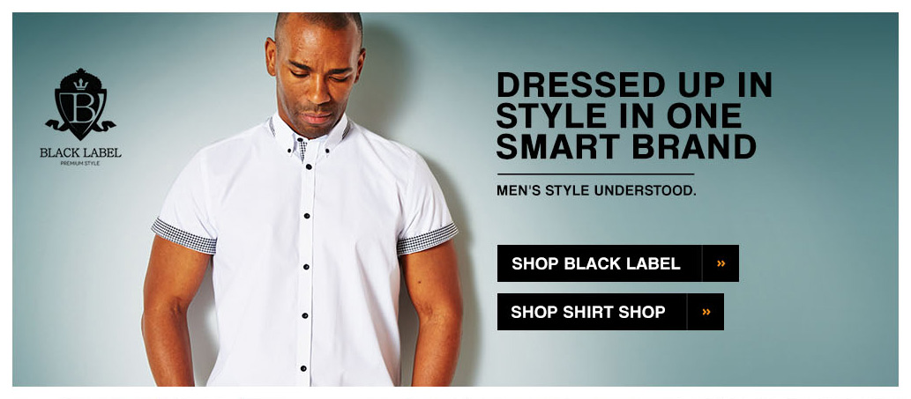
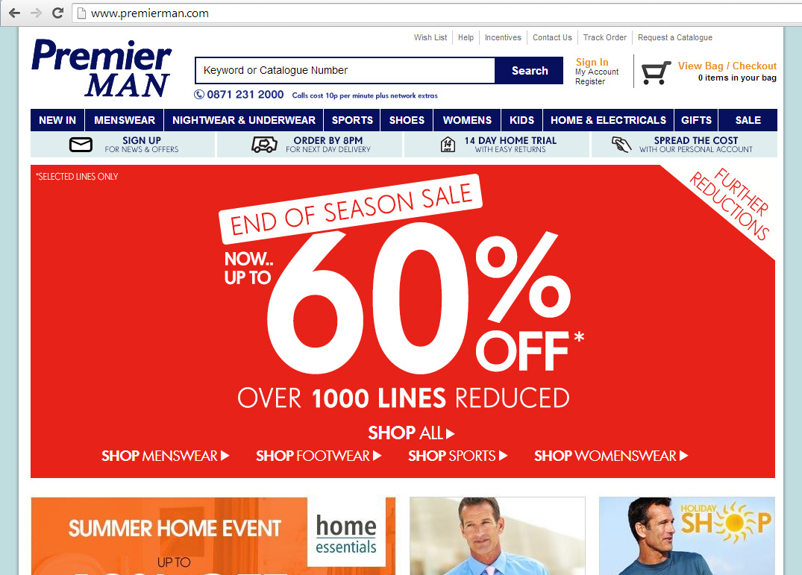
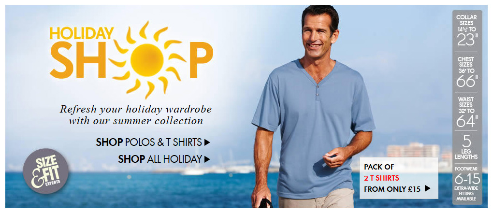
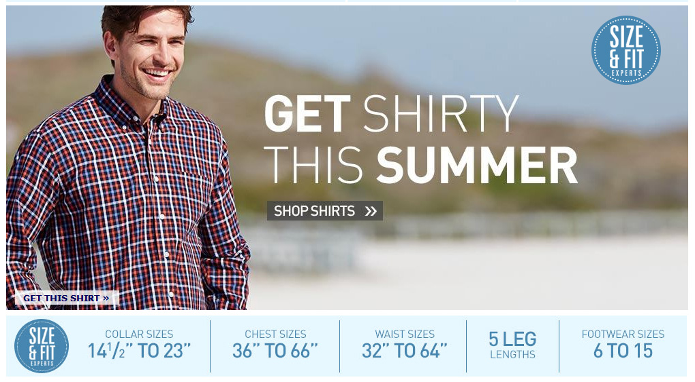
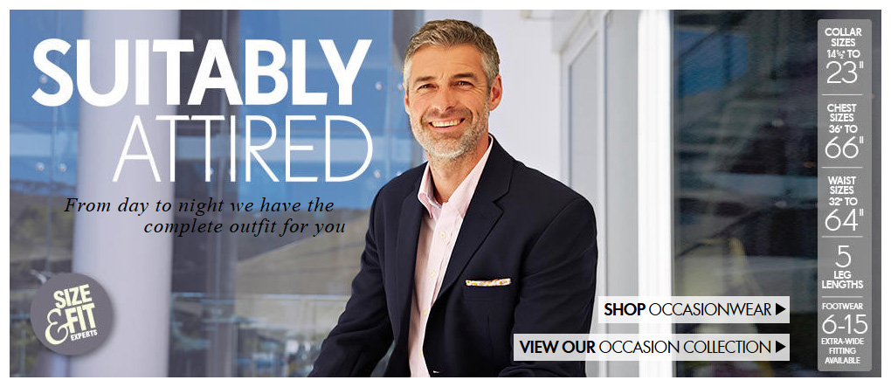
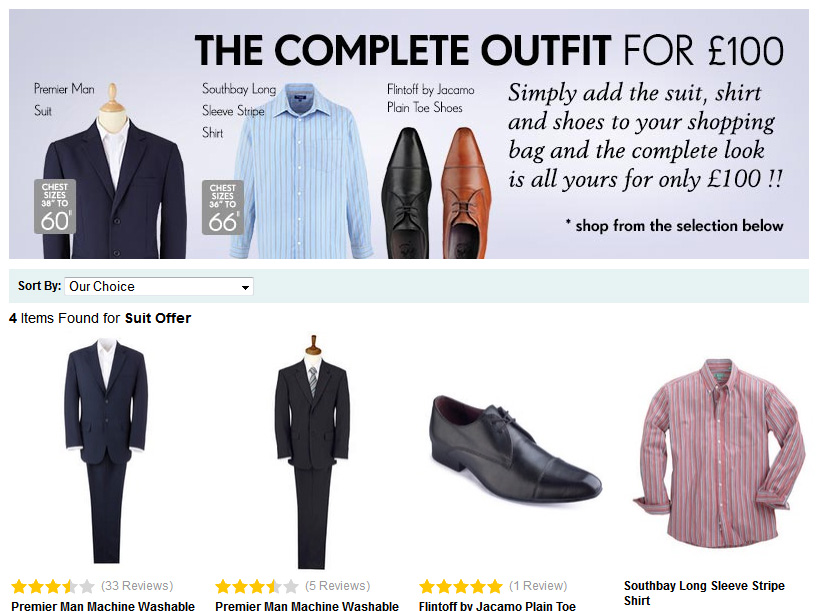
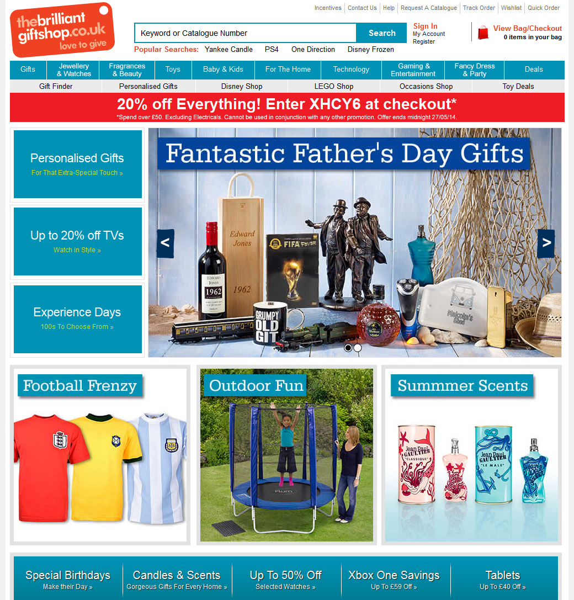